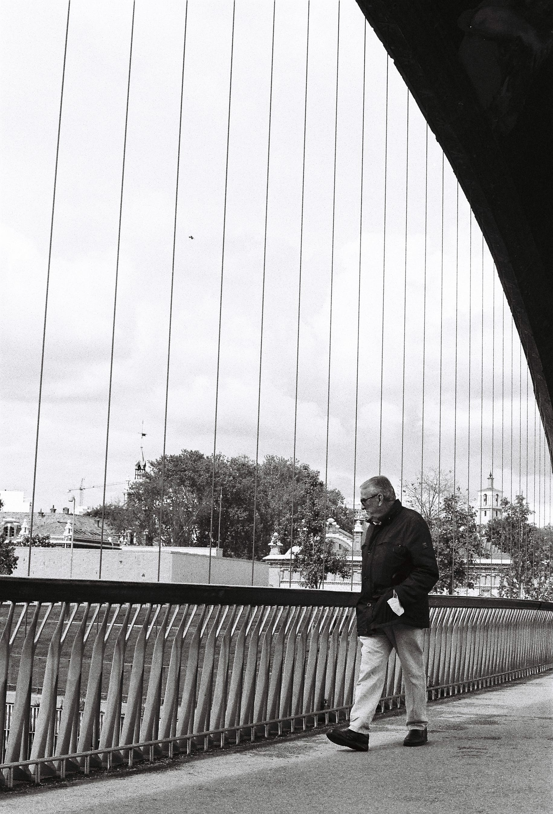
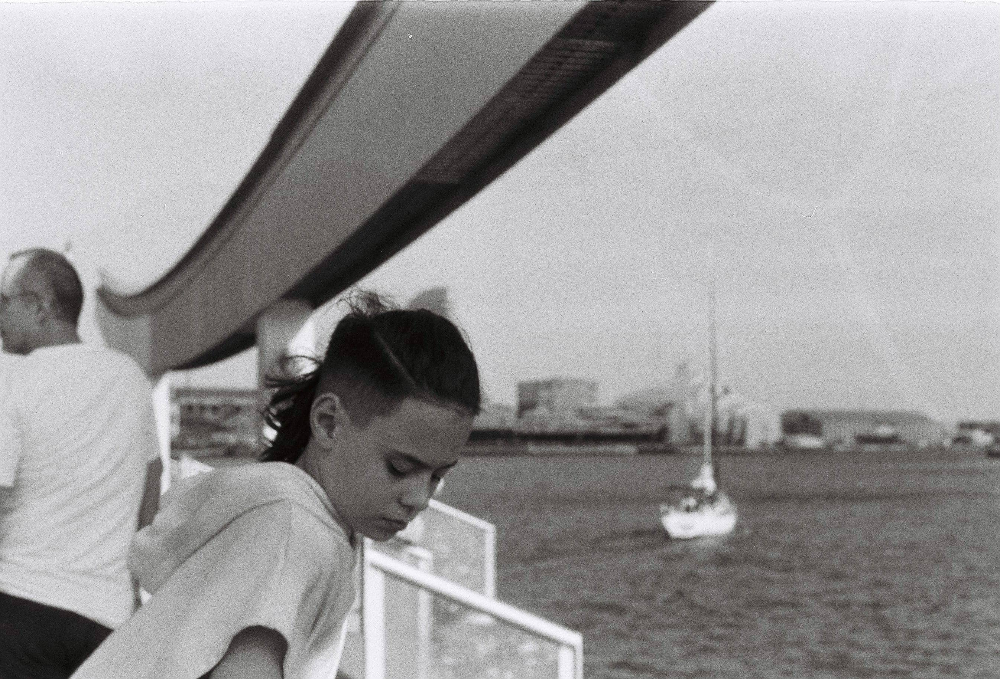

( 01 )

( 02 )
Pedro Parés is a Venezuelan photographer based in Madrid (Spain). His work focuses on street photography, with a particular emphasis on portraying cultural richness that surrounds us and exploring complex human emotions. He also has a strong interest in the audiovisual field, with extensive experience as a camera assistant and in the field of image direction.
Photographs available for sell.
Price upon request.

( 01 )

( 02 )